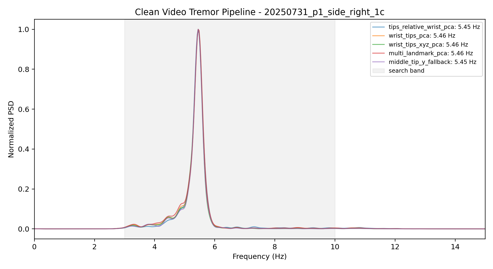

Patient Input
上传手部侧平举视频
视频预览区域
Analysis Flow
视频筛查流程
- 读取视频帧与帧率
- MediaPipe 手部关键点追踪
- 左右手分离与轨迹提取
- 指尖相对手腕运动建模
- Welch PSD 频谱峰值检测
- 输出双手频率与风险提示
选择视频后点击开始筛查分析。
Screening Result
视频筛查结果
右手震颤频率
5.45 Hz
左手震颤频率
3.80 Hz
筛查风险
中风险
检测到稳定节律性震颤特征
结果提示存在 3-7 Hz 范围内的节律性震颤信号。本结果仅供参考，具体请结合临床表现并咨询专业医生。
页面展示双手视频分析后的频率、可信度和筛查建议，便于快速查看患者手部震颤情况。
Video Spectrum
当前视频频谱图

Research Validation
算法验证：视频分析与 Xsens 金标准对比
患者真实使用时不需要上传 Xsens 金标准。这里的对比表用于向使用者或医生说明：视频算法在精选样本上与传感器金标准接近。
| 样本编号 | 视频分析频率 | Xsens 金标准频率 | 绝对误差 | 状态 | 方法 |
|---|